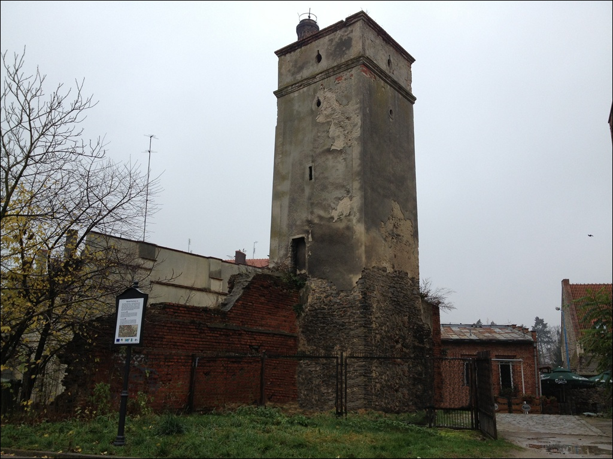

Poka¿ na mapie

Baszta prochowa
Jest to jedyna zachowana baszta dawnych fortyfikacji miejskich. Flankowa³a niegdy¶ po³udniowo-wschodni naro¿nik pier¶cienia murów obronnych.
Zbudowana na rzucie prostok±ta o wymiarach 4,5x4,0 m. Jej wysoko¶æ wynosi oko³o 15 m. Poniewa¿ grubo¶æ muru przekracza 1 m. powierzchnia wnêtrz nie osi±ga 4 m kwadratowych.
W ¶cianach widoczne s± otwory strzelnicze. Wzniesiono j± w XV w. Górna jej czê¶æ, z dwoma otworami strzelniczymi, pochodzi z XVI w. Baszta na pocz±tku XIX w. wraz z przylegaj±cym do niej
wówczas ogrodem by³a w³asno¶ci± szlachcianki Marii Teresy Radziejowskiej i do po³owy tego¿ stulecia s³u¿y³a jako wie¿a widokowa.